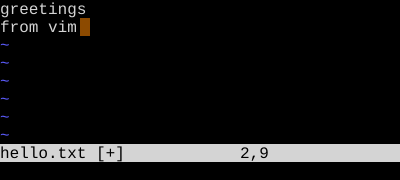
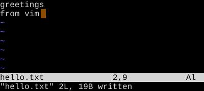

Open, Save, Quit
Launch Neovim, write your work, and get out — three ways each
Open a file withnvim. Write with:w. Quit with:q. Combine with:wq,:x, orZZ. Discard with:q!orZQ.
The single most-googled question about Vim is "how do I exit?" Let's get that out of the way first, then make it a real skill.
Opening a file
| Key | Note |
|---|---|
| @nvim hello.txt | |
| Enter |
If the file exists, you see its contents. If it doesn't, you see an empty buffer that will be saved as hello.txt the first time you write. Vim doesn't create the file on disk until you save.
Saving
| Key | Note |
|---|---|
| : | |
| w | |
| Enter |
:w "writes" — Vim's word for save. :w {filename} writes to a different filename (Save As). :w! forces a write through read-only flags.
Quitting
| Key | Note |
|---|---|
| : | |
| q | |
| Enter |
:q quits — if the buffer is clean. If there are unsaved changes, Vim refuses and tells you to save or force-quit. Force-quit with :q! discards changes and exits.
Save and quit
| Command | Behavior |
|---|---|
| :wq | Write, then quit. Always writes (even if nothing changed). |
| :x | Write if changed, then quit. Quieter than :wq. |
| ZZ | Same as :x — write-if-changed, then quit. Normal-mode shortcut. |
Quit without saving
| Command | Behavior |
|---|---|
| :q! | Discard changes and quit. |
| ZQ | Same — Normal-mode shortcut. |
Reference
| Goal | Command |
|---|---|
| Open a file | `nvim file` from the shell |
| Save | :w |
| Save as | :w new-name |
| Save (force, e.g. read-only) | :w! |
| Quit (clean buffer) | :q or :qa for all |
| Save then quit (always writes) | :wq |
| Save then quit (only if changed) | :x or ZZ |
| Quit, discarding changes | :q! or ZQ |
| Reload from disk (lose changes) | :e! |
Worked example — :w and :q
Save and quit from the Ex prompt.


Status loses [+]; the file is on disk. :q would now leave Vim.
See also: Insert and Back Again, Undo and Redo, File Operations, Buffers